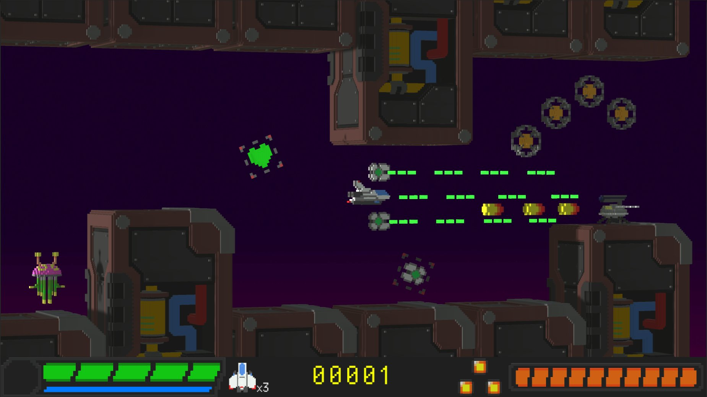

HyperNova [Unity]

全てがボクセルでできた世界で敵を倒して進んでいく、2D横スクロールシューティング。
敵を倒し、強化アイテムを集め、次々と現れる強大な敵に挑め！！
ディレクター: KuriTaro
プログラム: KuriTaro, Komihorium
デザイン: KuriTaro, tyPhoon, Tabasco III
ミュージック: tyPhoon
対応デバイス：Windows, MacOS

Reflect [Unity]


[WebGL] Play
Porsche 718 Cayman GT4 [Blender]


Jimny [Blender]

~Profile~
ニックネーム：くり太郎
使用言語：Java, C言語, C#, C++, Python
Twitter @S_KuriKun
Instagram s_kurikun
GitHub kuritaro1122
Booth Kuritaro Lab
Scratch Kuri-taro